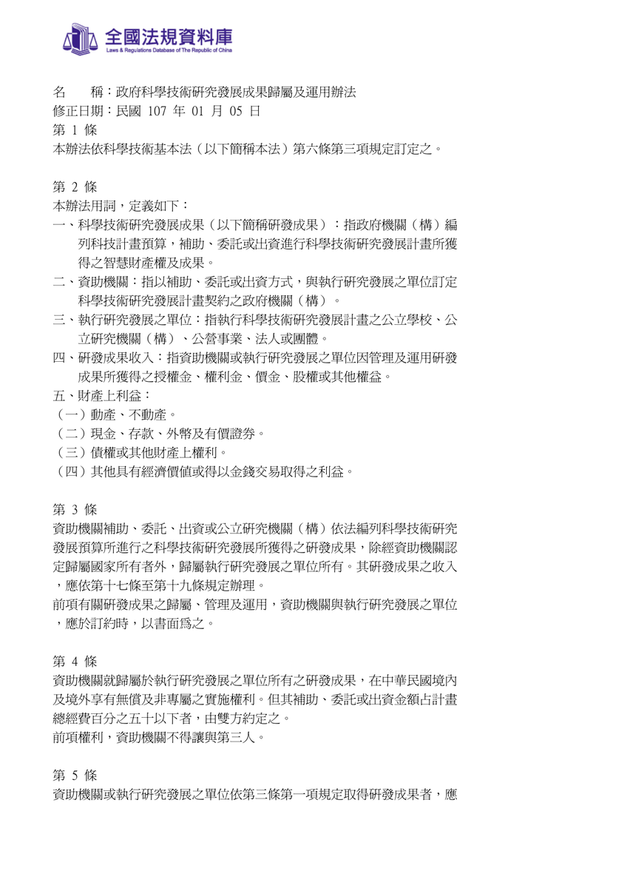
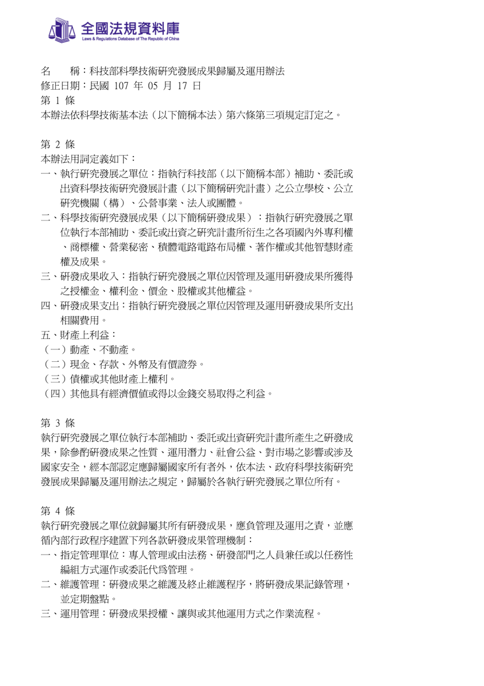
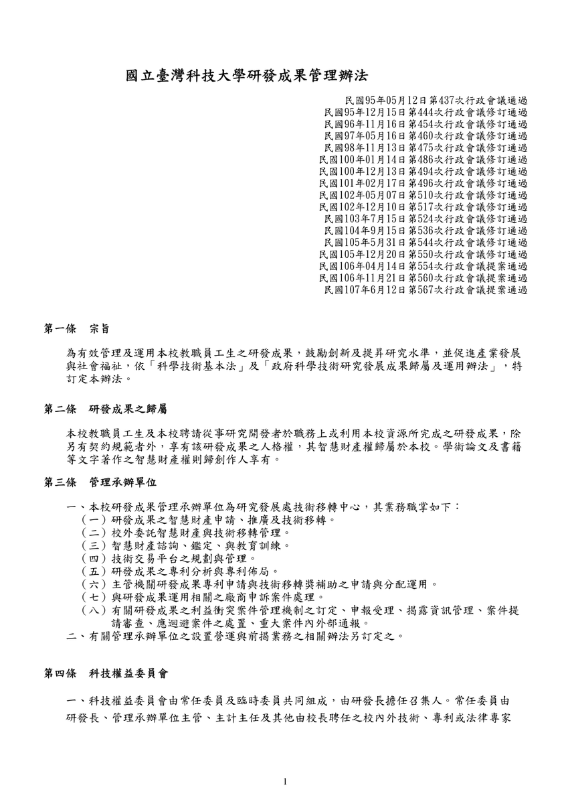
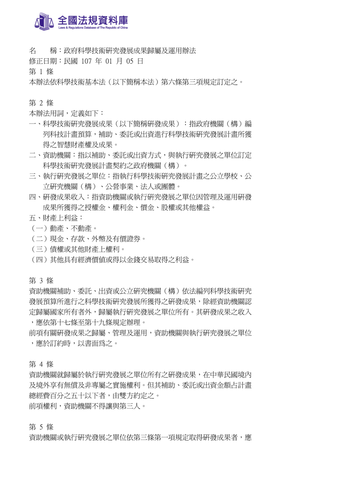
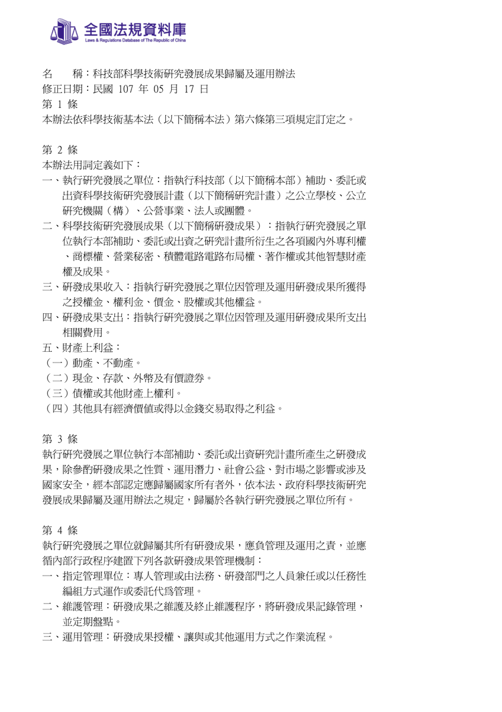
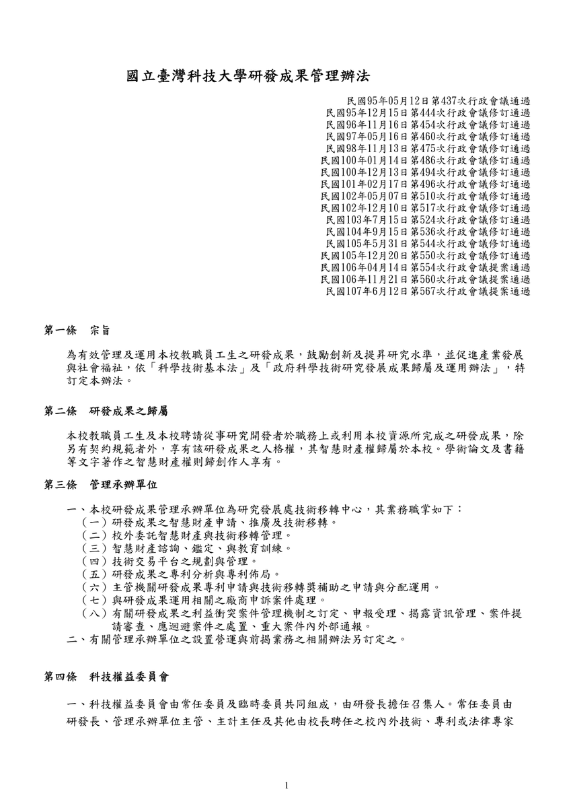

From the list: 7/8前｜計劃書撰寫 ✔ 請協助詢問科技部對於產權的底線，是否帶來與業界合作的限制。 Wei-An 謝. added this on Jun 18, 2019 Completed Jul 14, 2019 by Wei-An 謝. Assigned to A-Bao Comments & Events A-Bao, 計畫伴隨者 好的，科技部問題我和依寧討論一下，會將可能問題及選項和科技部詢問，會盡快回覆 Jun 19, 2019 at 11:48 PM Notified 1 person 依寧 會與科技部法務單位討論方向：1.過往是否有類似的情形？若有，會拿先前的契約為基礎做修正；若無，就會與大家討論可能與yahoo合作模式，盡快依範本內容草擬合約條款，並讓科技部法務單位知悉。2.會盡量爭取最彈性運作的合作方式，避免太多限制而綁手綁腳。ps,附  1政府科學技術研究發展成果歸屬及運用辦法.pdf 114 KB • Download 上科技部對於成果歸屬的法規內容 Jun 20, 2019 at 6:56 AM Notified 2 people 依寧 會與科技部法務單位討論方向：1.過往是否有類似的情形？若有，會拿先前的契約為基礎做修正；若無，就會與大家討論可能與yahoo合作模式，盡快依範本內容草擬合約條款，並讓科技部法務單位知悉。2.會盡量爭取最彈性運作的合作方式，避免太多限制而綁手綁腳。ps,附 1政府科學技術研究發展成果歸屬及運用辦法.pdf 114 KB • Download 上科技部對於成果歸屬的法規內容 Jun 28, 2019 at 1:15 AM Notified 2 people 依寧 關於成果歸屬的問題，已請前瞻司詢問法務單位，彙整如下：1. 若未來共同開發新建獨立的APP，會於APP同時掛上台科大團隊+yahoo公司。想請問APP上是可以允許出現yahoo公司標誌？(例如現在的「台北等公車」APP，有出現powered by yahoo!)→回答：研究成果歸屬於台科大，不會干涉掛名者。 2. 台科大團隊依「專題研究計畫補助合約書」約定取得成果歸屬後，該成果需與yahoo公司的既有APP架構結合 (即yahoo公司會利用團隊的成果)，此時台科大團隊可否主張適用《科技部科學技術研究發展成果歸屬及運用辦法》第11條但書情形，無償授權或免費讓yahoo運用台科大團隊成果，而yahoo公司會負責上架及後續APP營運？→回答：依《科技部科學技術研究發展成果歸屬及運用辦法》第12條規定，台科大須依其研究發展之單位內部行政程序簽准，且其研發成果讓與或授權給yahoo公司是符合學術研究、教育或公益用途，始得無償使用。 3. 這項獨立APP後續經由yahoo公司營運，可能會有廣告收益、或可能加值資料庫而有相關收入，此時能否有《科技部科學技術研究發展成果歸屬及運用辦法》第13條但書適用，相關所獲得的收入可免繳回科技部？→回答：依《科技部科學技術研究發展成果歸屬及運用辦法》第13條規定，假設台科大研發成果所獲得的收入，仍須依規定繳回收入的20%。例如研發成果獲利200萬，若yahoo與台科大有約定獲利分配比是5:5，此時台科大須繳回科技部20萬(100萬*20%)。簡單來說，科技部原則上不干涉與yahoo的合作，且盡量放寬認定，只要符合相關成果歸屬及運用辦法。我會建議與yahoo合作的合約細節，由台科大的研發中心代為處理較妥，因為團隊的研發成果能否無償授權或轉讓yahoo，須經台科大研發中心內部程序，且他們也熟悉相關對外合作事宜。謝謝！ps附上參考條文： 國立臺灣科技大學研發成果管理辦法 、 科技部科學技術研究發展成果歸屬及運用辦法  1科技部科學技術研究發展成果歸屬及運用辦法.pdf 120 KB • Download  國立臺灣科技大學研發成果管理辦法.pdf 141 KB • Download Jun 28, 2019 at 1:49 AM Notified 2 people Wei-An 謝維安, 碩士生 Note：與yahoo合作的合約細節，由台科大的研發中心代為處理較妥，因為團隊的研發成果能否無償授權或轉讓yahoo，須經台科大研發中心內部程序，且他們也熟悉相關對外合作事宜。 Jun 29, 2019 at 7:39 AM Notified 2 people Wei-An 謝維安 completed this to-do. Jul 14, 2019 at 4:16 AM
依寧 會與科技部法務單位討論方向：1.過往是否有類似的情形？若有，會拿先前的契約為基礎做修正；若無，就會與大家討論可能與yahoo合作模式，盡快依範本內容草擬合約條款，並讓科技部法務單位知悉。2.會盡量爭取最彈性運作的合作方式，避免太多限制而綁手綁腳。ps,附  1政府科學技術研究發展成果歸屬及運用辦法.pdf 114 KB • Download 上科技部對於成果歸屬的法規內容 Jun 20, 2019 at 6:56 AM Notified 2 people
依寧 會與科技部法務單位討論方向：1.過往是否有類似的情形？若有，會拿先前的契約為基礎做修正；若無，就會與大家討論可能與yahoo合作模式，盡快依範本內容草擬合約條款，並讓科技部法務單位知悉。2.會盡量爭取最彈性運作的合作方式，避免太多限制而綁手綁腳。ps,附 1政府科學技術研究發展成果歸屬及運用辦法.pdf 114 KB • Download 上科技部對於成果歸屬的法規內容 Jun 28, 2019 at 1:15 AM Notified 2 people
依寧 關於成果歸屬的問題，已請前瞻司詢問法務單位，彙整如下：1. 若未來共同開發新建獨立的APP，會於APP同時掛上台科大團隊+yahoo公司。想請問APP上是可以允許出現yahoo公司標誌？(例如現在的「台北等公車」APP，有出現powered by yahoo!)→回答：研究成果歸屬於台科大，不會干涉掛名者。 2. 台科大團隊依「專題研究計畫補助合約書」約定取得成果歸屬後，該成果需與yahoo公司的既有APP架構結合 (即yahoo公司會利用團隊的成果)，此時台科大團隊可否主張適用《科技部科學技術研究發展成果歸屬及運用辦法》第11條但書情形，無償授權或免費讓yahoo運用台科大團隊成果，而yahoo公司會負責上架及後續APP營運？→回答：依《科技部科學技術研究發展成果歸屬及運用辦法》第12條規定，台科大須依其研究發展之單位內部行政程序簽准，且其研發成果讓與或授權給yahoo公司是符合學術研究、教育或公益用途，始得無償使用。 3. 這項獨立APP後續經由yahoo公司營運，可能會有廣告收益、或可能加值資料庫而有相關收入，此時能否有《科技部科學技術研究發展成果歸屬及運用辦法》第13條但書適用，相關所獲得的收入可免繳回科技部？→回答：依《科技部科學技術研究發展成果歸屬及運用辦法》第13條規定，假設台科大研發成果所獲得的收入，仍須依規定繳回收入的20%。例如研發成果獲利200萬，若yahoo與台科大有約定獲利分配比是5:5，此時台科大須繳回科技部20萬(100萬*20%)。簡單來說，科技部原則上不干涉與yahoo的合作，且盡量放寬認定，只要符合相關成果歸屬及運用辦法。我會建議與yahoo合作的合約細節，由台科大的研發中心代為處理較妥，因為團隊的研發成果能否無償授權或轉讓yahoo，須經台科大研發中心內部程序，且他們也熟悉相關對外合作事宜。謝謝！ps附上參考條文： 國立臺灣科技大學研發成果管理辦法 、 科技部科學技術研究發展成果歸屬及運用辦法  1科技部科學技術研究發展成果歸屬及運用辦法.pdf 120 KB • Download  國立臺灣科技大學研發成果管理辦法.pdf 141 KB • Download Jun 28, 2019 at 1:49 AM Notified 2 people
Wei-An 謝維安, 碩士生 Note：與yahoo合作的合約細節，由台科大的研發中心代為處理較妥，因為團隊的研發成果能否無償授權或轉讓yahoo，須經台科大研發中心內部程序，且他們也熟悉相關對外合作事宜。 Jun 29, 2019 at 7:39 AM Notified 2 people
 A-Bao
A-Bao
好的，科技部問題我和依寧討論一下，會將可能問題及選項和科技部詢問，會盡快回覆
1.過往是否有類似的情形？若有，會拿先前的契約為基礎做修正；若無，就會與大家討論可能與yahoo合作模式，盡快依範本內容草擬合約條款，並讓科技部法務單位知悉。
2.會盡量爭取最彈性運作的合作方式，避免太多限制而綁手綁腳。
ps,附
1.過往是否有類似的情形？若有，會拿先前的契約為基礎做修正；若無，就會與大家討論可能與yahoo合作模式，盡快依範本內容草擬合約條款，並讓科技部法務單位知悉。
2.會盡量爭取最彈性運作的合作方式，避免太多限制而綁手綁腳。
ps,附
1. 若未來共同開發新建獨立的APP，會於APP同時掛上台科大團隊+yahoo公司。想請問APP上是可以允許出現yahoo公司標誌？(例如現在的「台北等公車」APP，有出現powered by yahoo!)
→回答：研究成果歸屬於台科大，不會干涉掛名者。
→回答：依《科技部科學技術研究發展成果歸屬及運用辦法》第12條規定，台科大須依其研究發展之單位內部行政程序簽准，且其研發成果讓與或授權給yahoo公司是符合學術研究、教育或公益用途，始得無償使用。
→回答：依《科技部科學技術研究發展成果歸屬及運用辦法》第13條規定，假設台科大研發成果所獲得的收入，仍須依規定繳回收入的20%。例如研發成果獲利200萬，若yahoo與台科大有約定獲利分配比是5:5，此時台科大須繳回科技部20萬(100萬*20%)。
簡單來說，科技部原則上不干涉與yahoo的合作，且盡量放寬認定，只要符合相關成果歸屬及運用辦法。我會建議與yahoo合作的合約細節，由台科大的研發中心代為處理較妥，因為團隊的研發成果能否無償授權或轉讓yahoo，須經台科大研發中心內部程序，且他們也熟悉相關對外合作事宜。謝謝！
ps附上參考條文： 國立臺灣科技大學研發成果管理辦法 、 科技部科學技術研究發展成果歸屬及運用辦法